Raspberry Pi Setup
This part of the tutorial will walk you through the following steps:
- Connecting to a printer
- Setting up ReportLab
- Setting up the camera
- Getting the Pix script
- Putting it all together!
Your printer can either connect to your Pi via USB or through your wifi network if your printer is set up as a network printer.
Hopefully you were able to get an SD card with NOOBS preinstalled. If not, follow the instructions on this page to install NOOBS on a fresh SD card – if you need to do this, be aware that it's a long process that will take about 1.5 hours!
Install your SD card into the Pi, hook up your display and your keyboard and mouse, and power up your Pi to get started.
NOTE:
I find it easiest to do this part with the Raspberry Pi off the Pix stand, so feel free to unplug the button and indicator light for now.
1. Connecting to a printer
First, we'll establish a connection with a printer. You'll need to connect your Pi to the Internet by either plugging in an ethernet cable or connecting via Wi-Fi. To connect to Wi-Fi, click the internet icon on the toolbar and connect to your network.
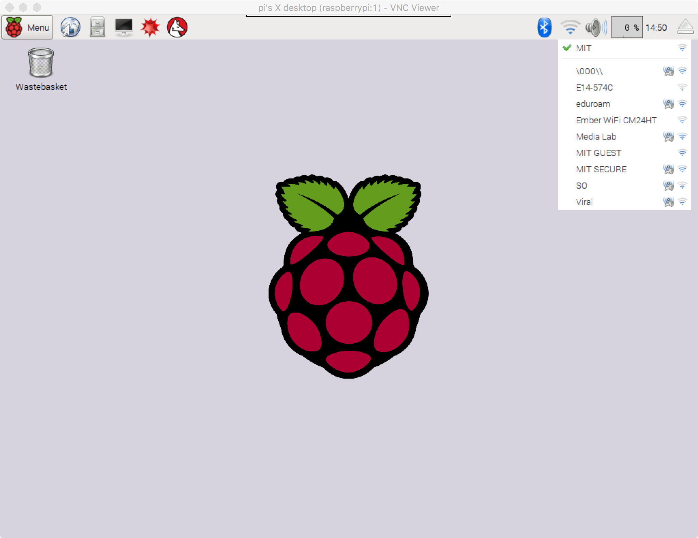
Next, open up a terminal window (the computer screen icon in the top left).
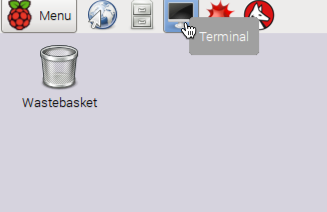Type the following to install the Common Unix Printing System (CUPS):
sudo apt-get install cupsAfter the installation completes, type the following to add permission to access the printer settings:
sudo usermod -a -G lpadmin piWe also need to download the python library for CUPS:
sudo apt-get install python-cupsNow open up a web browser on your Pi (the globe icon that is by default located next to the menu button in the top left) and type the following into the address bar:
localhost:631This will open up the CUPS interface:
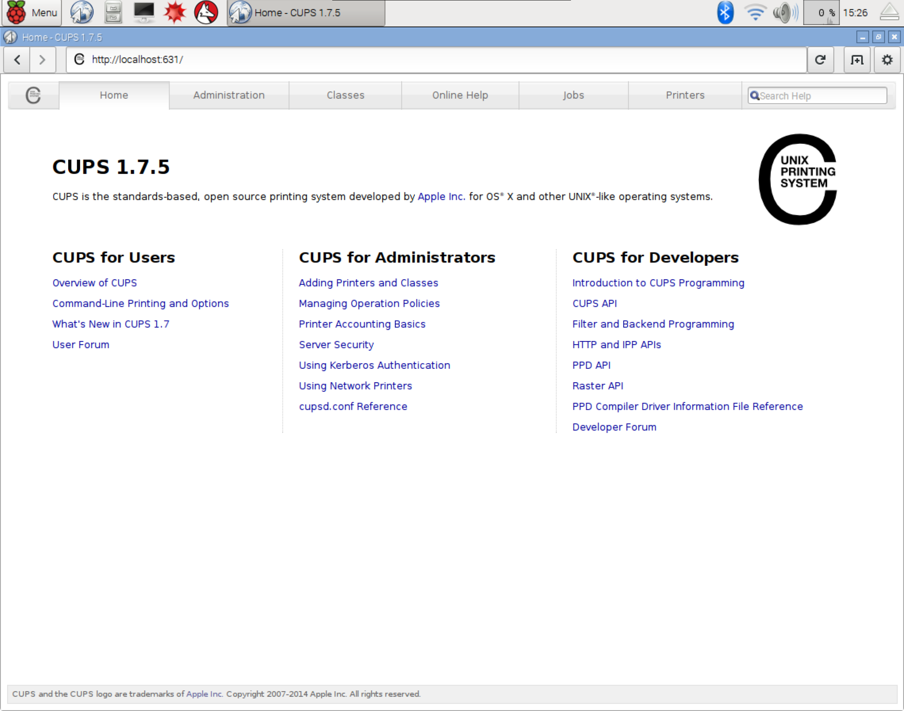From here, click the Administration tab and then click the Add Printer button:
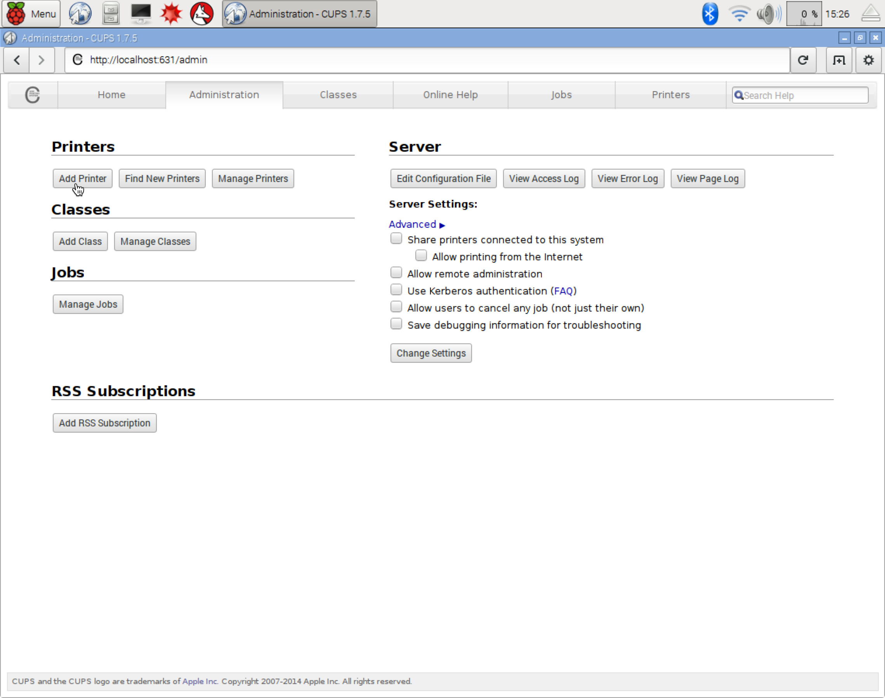 You'll be prompted to enter in your Pi username and password, which should be pi and raspberry by default.On the next screen, select your printer and click Continue. Your printer can either be connected via USB to your Pi (a Local Printer), or you can connect to a network printer (under Discovered Network Printers).
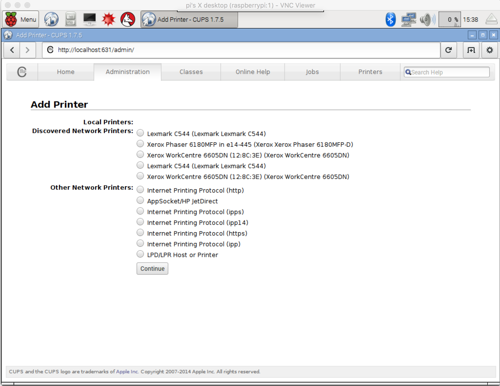Next, you can give the printer an easy to remember name and description (both optional) before clicking Continue.

After selecting the printer, you'll be asked to provide a PPD file. I recommend Googling for your printer model + PPD online to download a copy of the PPD file.
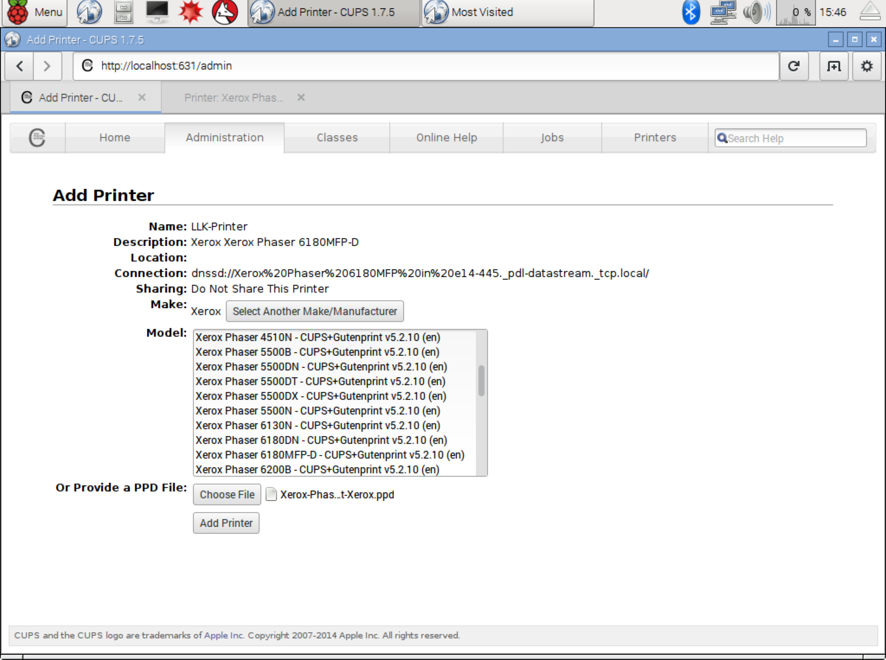After clicking Add Printer, you'll have options to set the default print settings. When you're done, click Set Default Options.
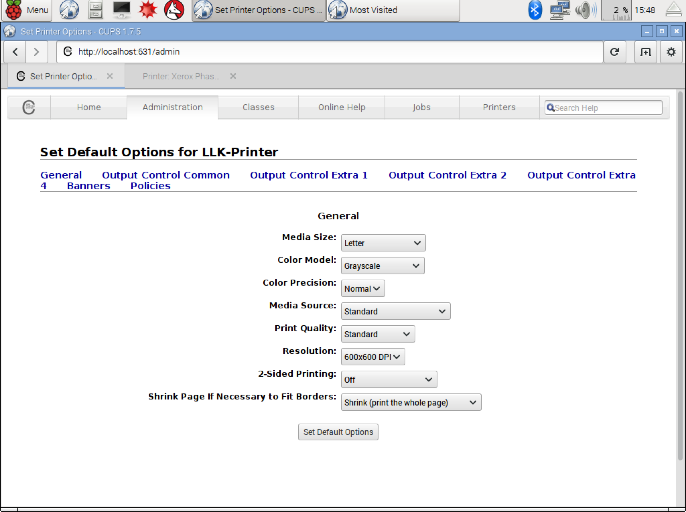You can now send a test print to ensure that the Pi is connecting to the printer. Click on Maintenance and select Print Test Page.
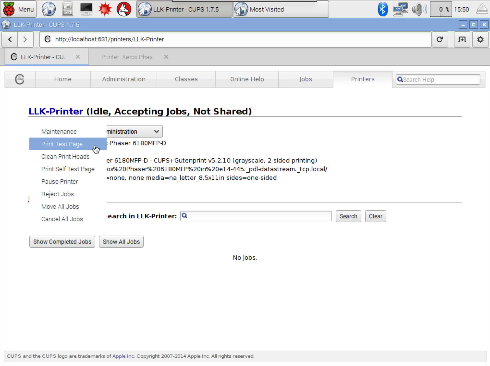You should get a printout that looks like the one below:
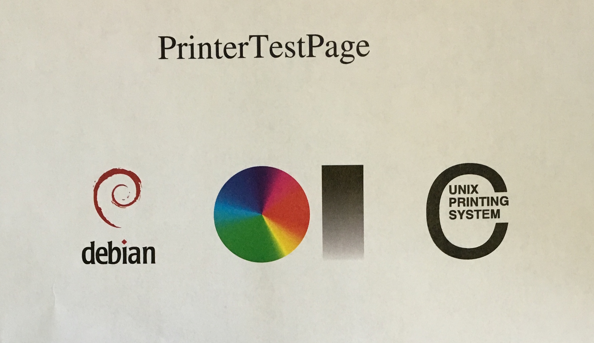Yay, we've printed from our Pi!
2. Setup ReportLab
Pix uses the ReportLab python toolkit to create PDFs that are then printed. In order to install ReportLab, we'll first get the latest packages by running the following in the terminal:
sudo apt-get updateWhen this completes, run the next command, which will install the latest version of python
sudo apt-get install python-devOk! Now we can get ReportLab:
sudo pip install reportlab3. Setup the camera
To enable the Raspberry Pi Camera, you'll need to edit the Raspberry Pi Configuration by clicking on Menu > Preferences > Raspberry Pi Configuration.
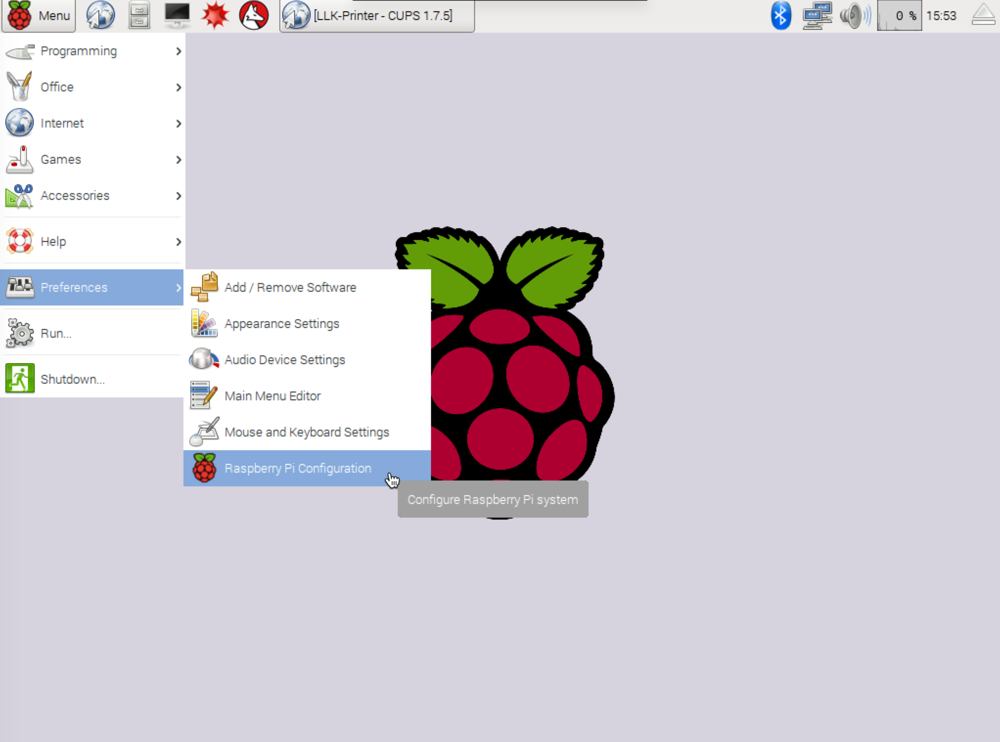Click on the Interfaces tab and click Enable for Camera at the top of the list. At this point, your PI will reboot.
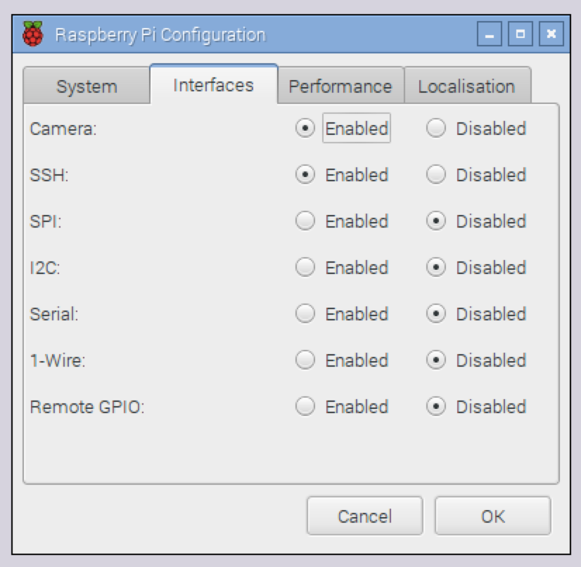
4. Get the Pix Script
Now that all the pieces are in place, you can get Pix running on your Raspberry Pi. Open up the browser on your Pi to https://raw.githubusercontent.com/ttseng/Pix/master/Software/pix.py.
Click on the gear icon on the right and click Save as to save the python script.
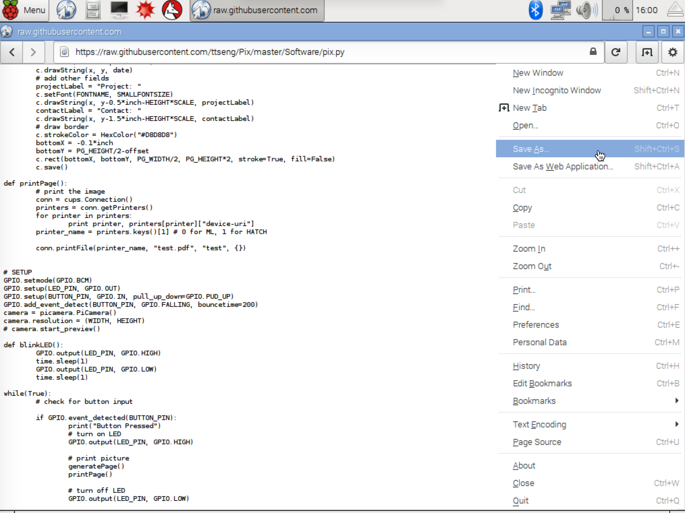Click on the Home icon on the left, create a folder called Pix and select the folder to save the script inside. Name it pix.py and click save.
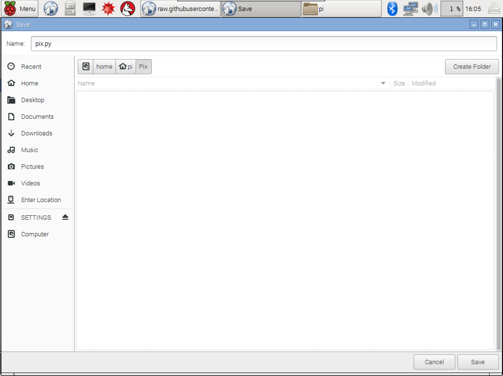5. Putting it all together!
If you open a terminal window, you can test out the script by running
sudo python Pix/pix.pyWhen you press the button on your Pix, you should now see the message Button Pressed in the terminal, and your print out should be created shortly afterward.
NOTE:
The default script is designed to print 1/4" page printouts on Letter-sized paper (8.5x11). Feel free to edit the script to modify it for your printer page size.
The last step is to set up the Pi so that it will automatically run this program when it starts up.
In the terminal, type:
sudo nano /etc/rc.localThis will open up an editor for you to edit this setup file. Before exit 0, type the following lines:
sleep 10
python /home/pi/Pix/pix.pyNow, press ^x (this is control + the letter x on your keyboard) to save. Enter Y and press the enter key to save.
Now, if you run sudo reboot, your Pi will reboot, and after starting up, you can check whether your Pix is still working as expected (press the button, ensure that it takes a picture and creates a print out).
Print out!
You're done with the default setup for Pix! Click below to learn about some ways to use Pix.
Using pix